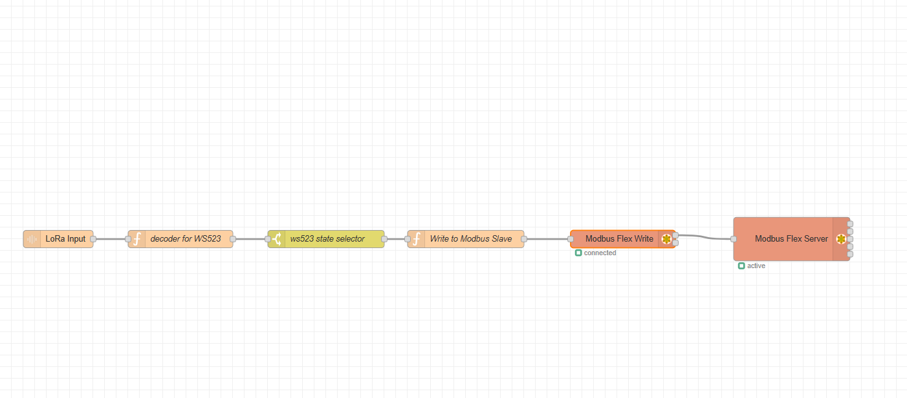
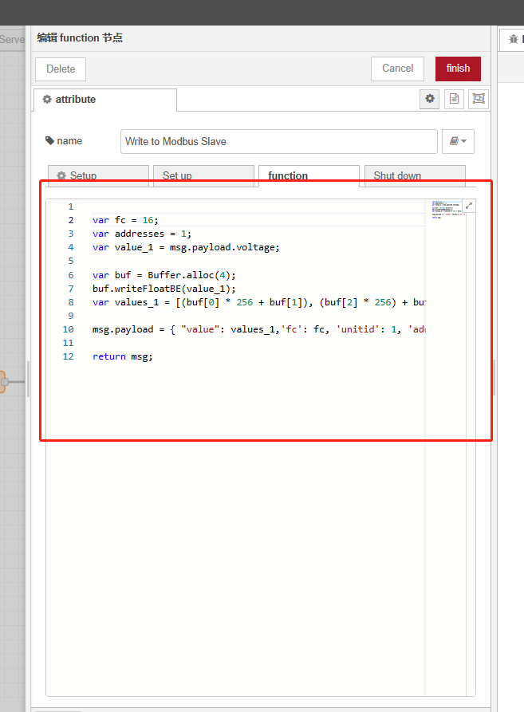
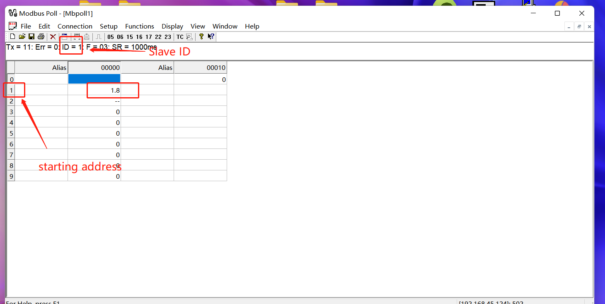

How to use the UG65 gateway as a Modbus Server to store sensor data, and use a Modbus Master to retrieve the sensor data
This document will guide you on how to use Node-RED on the UG65 gateway to store voltage data values from a WS523 device in the gateway's internal registers, allowing you to read the data values in real-time using Modbus Master.
You can enter this link on your PC browser to download the related JSON file：.https://resource.milesight-iot.com/Support/Charles/flows-modbus.json
Step by step:
You need to connect the WS523 device to the built-in NS (Network Server) of the Milesight UG65.
You need to log in to the front-end configuration webpage of the UG65 gateway, launch the Node-RED software, and import the JSON file.You can download this JSON file as an attachment in the email. After importing this JSON file into Node-RED, you will see the following data flow diagram. The functionality of this data flow diagram is to write the voltage value of the WS523 device into the built-in registers of the UG65 when the WS523 socket is externally powered

The functions of each node in the diagram are as follows:
① LoRa Input: Receive LoRa data transmitted by the WS523.
② decoder for WS523: Decode the LoRa data received from the WS523.
③ Ws523 state selector: Filter out the sensor data from WS523 devices that are externally powered.
④ Write to Modbus Slave: Write the voltage data from the WS523 sensor into a specific register (determined by the Slave ID and Starting Address).
⑤ Modbus Flex Write and Modbus Flex Server: Write the voltage data into the registers of the local machine (UG65).
The most notable node mentioned above is the 'Write to Modbus Slave' node. It is a function node that determines where we store the voltage data in which register and starting address. When you double-click on this node with your mouse, you will see the code inside it, as shown in the following image.

The code in the above image is as follows:
var fc = 16;
var addresses = 1;
var value_1 = msg.payload.voltage;
var buf = Buffer.alloc(4);
buf.writeFloatBE(value_1);
var values_1 = [(buf[0] * 256 + buf[1]), (buf[2] * 256) + buf[3]]
msg.payload = { "value": values_1,'fc': fc, 'unitid': 1, 'address': 1, 'quantity': 2 };
return msg;
The statement msg.payload = { "value": values_1,'fc': fc, 'unitid': 1, 'address': 1, 'quantity': 2 }; is the code what you need to modify. You don't need to modify the rest of the code. 'unitid' determines the Slave ID, and 'address' determines the starting address of the register. Therefore, you only need to modify 'unitid' and 'address' to store the voltage data in different registers. So from the above code, we can understand that I am storing the voltage value in the register with Slave ID 1 and starting address 1.
Reading Test From Modbus Master
The voltage of my current WS523 socket is 1.8 volts. I am using Modbus Poll software as a Modbus Master to read the voltage value stored in the register with Slave ID 1 and starting address 1 in UG65.
As shown in the figure below, I successfully obtained the register data of Slave ID 1 and starting address 1 in Modbus Poll, which stored the current voltage value of WS523. As shown in the figure below, I successfully obtained the register data of Slave ID 1 and starting address 1 in Modbus Poll, which stored the current voltage value of WS523.
